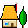
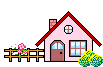
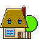
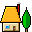
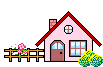
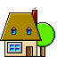

.gif)
.gif) 





.png)


.gif)
.gif)
.gif)
.gif)

.gif)
A Second Life: Living Online
Christy Dena
Second Life is Lego for adults. Rather than building miniature homes with colourful plastic bricks, grown-ups are putting their hard-earned cash into transluscent clay: pixels.Second Life (SL), if you haven’t already heard, is an online virtual world with over one million registrations.
It’s a 3D space that you enter and move around. Unlike massively multiplayer role-playing games like World of Warcraft, Linden Labs (the company behind SL) decided to offer no game, no missions, no tasks or roles to play. It is up to the residents of SL not only to inhabit but create it and everything you can do in it, pixel by pixel.
So what do the SL residents, who are on average 32 years of age, choose to create?
Everyday Avatars
In Hinduism, an avatar refers to the embodiment of an immortal being. In virtual worlds, an avatar refers to the embodied representation of each player or resident. I have an avatar, but cannot claim any access to divine knowledge. And, unlike the imaginative incarnations of Hindu beings, such as Hayagriva’s human body with a horse head, the bodies preferred by SL residents are surprisingly vapid. Most avatars in SL are ‘ideal’ forms such as tall, slim, glamorous women and men with washboard abdominals and even musclier arms. Unlike real life, it is harder to put on weight, age and be ugly in SL. In order to corrupt your avatar you need to either tweak your appearance or buy another. You can look, dress and act any way you like in SL, for a price.
You can choose another gender or species, various personae (Brad Pitt, Yoda),
an abstract installation or create your own. Your decisions about how you portray yourself in this world are important because other avatars judge you on those choices.

These personalisation practices are not unique to SL or virtual worlds, but the facility to be infinitely bold is embedded in the option to program yourself, literally. SL also provides the capacity to weave this construction beyond the avatar to a home and lifestyle.
Virtual House and Garden
Residents of SL can purchase land and build homes. Rather than suburbia or futuristic hover cars (although they are there), the landscape of SL is a collection of islands that can be tweaked to your heart’s desire. There are tranquil waterfalls, three-storey homes with waterfront views and yachts docked out the front, castles, shopping malls and casinos. Homes can be fitted out with stainless steel kitchen fittings, fireplaces, shag carpets and swimming pools. Residents buy their homes, goods and services from small or large inworld department stores and, wait for it, their favourite designers. Just like real life, there are celebrity fashion and furniture designers and architects in demand. Indeed they often have their own websites and print magazines to advertise and discuss their businesses.
Taking Home Virtual Bread
There are two factors that facilitate this activity: Linden Labs “recognizes Residents’ right to retain full intellectual property protection for the digital content they create in Second Life” and the inworld currency (Linden Dollars) can be converted to US dollars and deposited into your real life bank account. There are residents, therefore, who earn a living from the money they make in SL. Anshe Chung, for instance, earns over one hundred thousand (real) dollars each year from selling span virtual real estate.
A resident doesn’t have to run their own business though; they can earn Linden dollars from the services they provide as model, lap dancer, escort, DJ, wedding planner, bouncer, bar person or artist. There are also many real life visual artists, filmmakers, musicians and writers creating inworld representations of their works and streaming live performances.
Is SL All Work and No Play?
Irrespective of the seemingly infinite potential that SL provides as a creative platform, it is a ghost town without the richness of interaction. It is not until people socialise and converse about scientific theories, business practices or relationships that visitors become residents. This shift to seeing oneself as part of a world is facilitated by the cultural and intellectual activity within SL and the ability to communicate more richly. Rather than rely on voice or text, you can run scripts that animate your avatar to laugh, hug and even seduce. Indeed, residents start relationships with varying degrees of real life consequences, get married and have virtual children. However, you can participate in many ways without such intense bonding.
How about dancing and sucking on a cigar at a jazz club or attending an inworld concert with Suzanne Vega or U2? You could also check out The New West, an exhibition of resident—created virtual art which was part of ZeroOne San Jose/ISEA2006 (www.ludica.org.uk/NewWest/). Or, if your inclination is literary, attend Cory Doctorow’s book launch and read his book inworld. If it’s theatre you’re after, see a play at The New Globe or play an elf in a Lord of the Rings simulation. If it’s knowledge you’re after, then attend a lecture streamed in from the Harvard Law School (blogs.law.harvard.edu/ cyberone) or take a class in international new media at Second Lifes’ NMC Campus (www.nmc.org/sl). Or, you could learn about rockets via a live video feed from NASA at the International Space Flight Museum (slispaceflightmuseum.org). If all this ‘high’ culture is a bit too much in a cartoon land, you can always fly over Big Brother in SL and watch fellow avatars throw scripted tantrums over virtual food (www.bigbrothersl.com). Doesn’t this sound like an ideal world?
Straw Homes
Virtual homes are like houses of straw in that they can be easily blown down by the big bad corporation. When SL is down because of a ‘griefer’ attack or for updates, people are locked out of their second life, their mode of interaction with friends and family, their businesses and classrooms. Sal Humphreys, a post-doctoral Research Fellow from the Queensland University of Technology, has observed the implications for people moving their social lives online to proprietary spaces. So, why do people invest so much time and money in a world that they do not own? Residents do not see themselves as subscribers paying to access Linden Labs’ proprietary world.
Instead, some see themselves as paying LL to manage the world on their behalf. LL is in service to them. This is a paradigm shift in the way ‘users’ are approaching many so-called user-generated sites...a shift that is not shared by the corporations who run these sites. Players, residents and staff persist however. Why?
Beyond Holodecks
Many online virtual worlds trigger fantasies that the Star Trek holodeck has been realised. A holodeck is that mutable space where the crew of a future spacecraft can summon any scene their imagination conjures. Just like Lego constructions scattered over the loungeroom floor, the holodeck is a space where fantasy takes place. Virtual worlds like SL, however, induce the butterflies-in-the-stomach feeling that a pervasive parallel world is emerging around us. If you can socialise, marry and work in this second life, then isn’t it an equal reality? Irrespective of the intangible nature of the SL world, for many it’s the beginning of a new world and a new species.